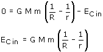

|
Se supone que en esta etapa el motor funciona durante un tiempo muy corto de forma que el satélite adquiere la velocidad de ascensión sin despegarse del suelo (Es como si se le disparase con un cañón) Cambios de energía mecánica desde que el satélite parte de la Tierra con una cierta energía cinética hasta que llega a la altura deseada y queda quieto:
Cálculo del trabajo: Durante la ascensión, el satélite solo está sometido a la fuerza gravitatoria cuyo trabajo ya está contado en la variación de energía potencial por tanto T = 0. Aplicando el principio de conservación:  |